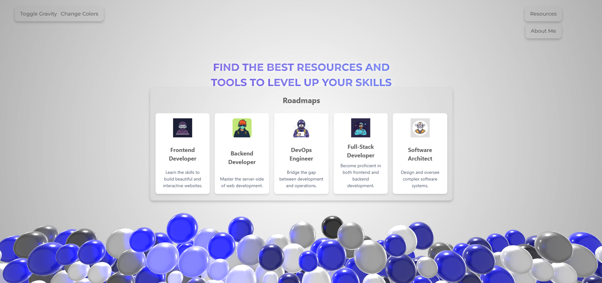
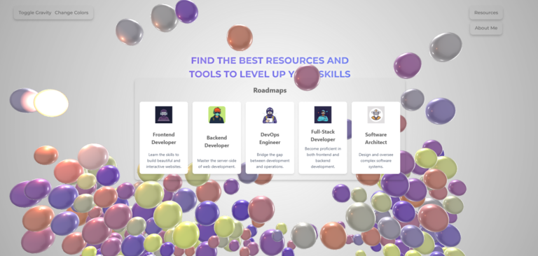
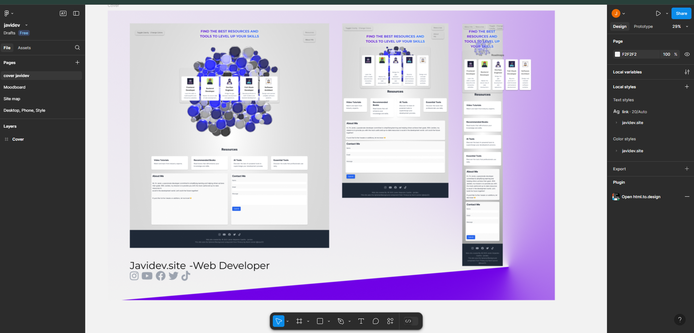
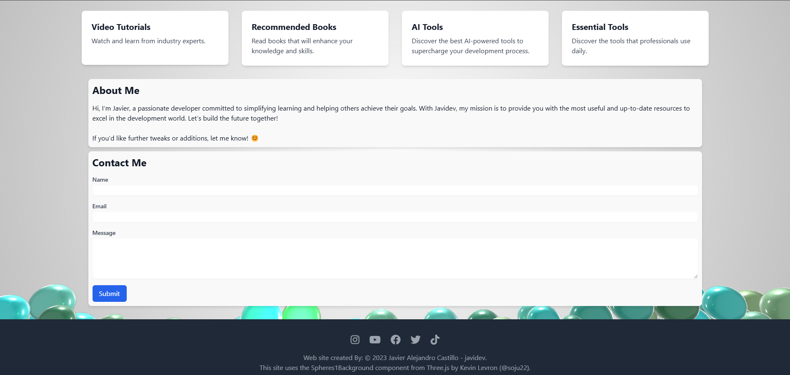

Frontend Development javidev.site UX/UI coding & design

This project highlights the end-to-end development of javidev.site, showcasing expertise in both UX/UI design and frontend coding. The goal was to create a visually compelling, intuitive, and fully responsive platform to share roadmaps, video tutorials, recommended books, and essential tools for developers and tech enthusiasts.
Highlights
- Figma: For UX/UI design, including mood boards, sitemaps, frameworks, and prototypes.
- HTML5, CSS, Tailwind CSS, JavaScript: For building the website from scratch with clean and optimized code.
Most Important Tools Used
CSS
JavaScript
Figma
Tailwind
HTML5
Visit Website >>
Go to the PortfolioMy Role in the Project
I was responsible for every aspect of the project, including:
- Researching and defining user needs.
- Designing the UX/UI with a focus on usability and modern trends.
- Coding the entire website from scratch.
- Testing and optimizing the final product for performance and responsiveness.

Strategy
The project began with user research to understand the needs of developers and tech enthusiasts. Key insights shaped the sitemap and ensured intuitive navigation for resources like tutorials and roadmaps.
Design
The design process started with a moodboard to define the visual identity, using a modern color palette and clean typography. Wireframes and prototypes in Figma ensured a user-friendly layout. Minimalist icons, responsive design, and a strong visual hierarchy created a sleek, professional look.

Features
- Interactive Roadmaps: Node-based visuals for clear learning paths.
- Tutorials and Resources Section: Organized video tutorials, AI tools, and essential development tools.
- Responsive Design: Seamlessly adapts to mobile, tablet, and desktop views.
- Optimized Performance and Search Functionality.

— End of project —